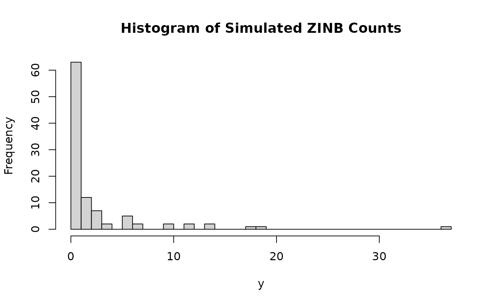
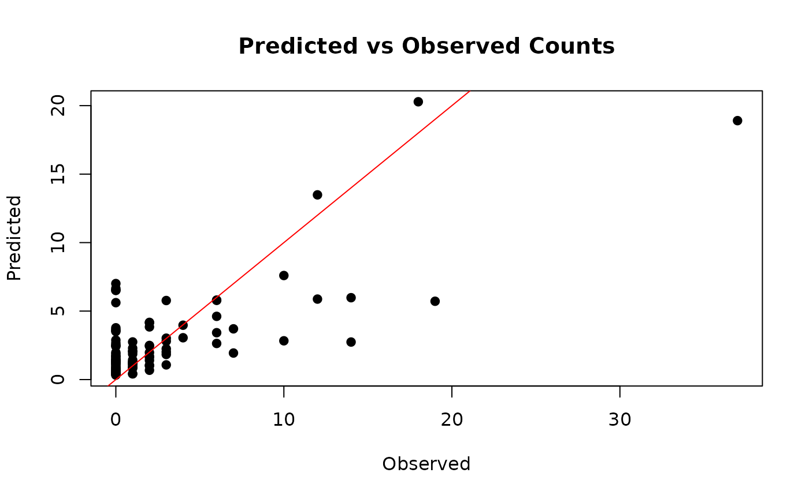

Demonstration of ZINB_NNGP with Simulated Spatial-Temporal Data
Hsin-Hsiung Huang and Mahlon Scott
March 07, 2025
HuangExplanation.rmdOverview
This document demonstrates the use of the ZINB_NNGP function from the ZINB.GP package, which implements a Zero-Inflated Negative Binomial (ZINB) model with Nearest Neighbor Gaussian Processes (NNGP) for spatial-temporal data. The package is sourced from GitHub: KingJMS1/NNGP_ZINB_R. We will simulate spatial and temporal data, then apply the ZINB_NNGP function to model it.
Simulating Spatial-Temporal Data
We will simulate data with spatial and temporal components. Assume we have:
n_locs: Number of spatial locations n_times: Number of time points X: Covariate matrix y: Response variable (counts with excess zeros) coords: Spatial coordinates Vs, Vt: Spatial and temporal variance components Ds, Dt: Spatial and temporal distance matrices Step 1: Define Parameters t
n_locs <- 10 # Number of spatial locations
n_times <- 10 # Number of time points
n <- n_locs * n_times # Total number of observations
M <- 3 # Number of nearest neighbors for NNGP
nsim <- 400 # Number of MCMC simulations
burn <- 200 # Burn-in periodStep 4: Simulate Spatial and Temporal Effects
Simulate spatial and temporal covariance matrices using an exponential decay function.
# Number of locations and time points
n_locs <- 10 # spatial locations
n_times <- 10 # time points
n <- n_locs * n_times # total observations
# Generate spatial coordinates for 10 locations
coords <- cbind(runif(n_locs, 0, 10), runif(n_locs, 0, 10))
# Create a time vector (assuming evenly spaced time points)
time_points <- seq(1, n_times)
# Expand spatial coordinates: repeat each spatial location for each time point
# Not actually necessary for use of package, just for later analysis
coords_st <- do.call(rbind, replicate(n_times, coords, simplify = FALSE))
# Create a time index for each observation
time_index <- rep(time_points, each = n_locs)
# Recompute the full spatial distance matrix for all observations (100 x 100)
Ds <- as.matrix(dist(coords))
# Compute the full temporal distance matrix for all observations (100 x 100)
Dt <- as.matrix(dist(time_points))
# Create spatial and temporal design matrices, indicates which observations
# correspond to which positions spatially and temporally
Vs <- as.matrix(sparseMatrix(i = 1:n, j = rep(1:10, 10), x = rep(1, n)))
Vt <- as.matrix(sparseMatrix(i = 1:n, j = time_index, x = rep(1, n)))
# Create spatial and temporal covariance matrices
# Initialize kernel parameters
cov_scale <- 0.5
dist_scale_space <- 0.3
dist_scale_time <- 2
# Spatial
Cs <- (cov_scale^2) * exp(-dist_scale_space * Ds)
# Temporal
Ct <- (cov_scale^2) * exp(-Dt / (dist_scale_time ^ 2))Step 5: Simulate Response Variable
Generate a ZINB response variable with spatial-temporal effects.
# Simulate latent spatial-temporal effects
err <- 0.1
spatial_effect <- rmvnorm(n = 1, sigma = Cs + diag(err, 10))
temporal_effect <- rmvnorm(n = 1, sigma = Ct + diag(err, 10))
eta <- X %*% c(1, 0.5) + Vs %*% t(as.matrix(spatial_effect)) + Vt %*% t(as.matrix(temporal_effect))
# ZINB parameters
phi <- 2 # Dispersion parameter
pi <- plogis(-1 + 0.3 * X[, 2]) # Zero-inflation probability
mu <- exp(eta) # Mean of NB component
# Simulate ZINB data
y <- numeric(n)
for (i in 1:n) {
if (runif(1) < pi[i]) {
y[i] <- 0 # Zero-inflated part
} else {
y[i] <- rnbinom(1, size = phi, mu = mu[i]) # NB part
}
}
# Expand coords for spatial-temporal grid
coords_st <- expand.grid(x = coords[, 1], y = coords[, 2], t = time_points)
coords_st <- as.matrix(coords_st[, 1:2]) # Only spatial coords for NNGP
# Summary of y
summary(y)
#> Min. 1st Qu. Median Mean 3rd Qu. Max.
#> 0.00 0.00 1.00 2.59 2.25 37.00
hist(y, breaks = 30, main = "Histogram of Simulated ZINB Counts")
Running ZINB_NNGP
Now, apply the ZINB_NNGP function to the simulated data.
# Expanded coordinates for all observations (100 x 2)
# (coords_st was already computed as the expanded grid)
# Now call the function with observation-level covariance matrices:
output <- ZINB_NNGP(
X = X, # 100 x 2
y = y, # length 100
coords = coords, # 100 x 2 expanded coordinates
Vs = Vs, # 100 x 100 covariance matrix
Vt = Vt, # 100 x 100 covariance matrix
Ds = Ds, # 100 x 100 distance matrix
Dt = Dt, # 100 x 100 distance matrix
M = M,
nsim = nsim,
burn = burn,
save_ypred = TRUE
)Exploring the Output
Examine the structure of the output and summarize key results.
# Structure of the output
str(output)
#> List of 25
#> $ Alpha : num [1:200, 1:2] 1.165 0.888 0.763 0.504 1.207 ...
#> $ Beta : num [1:200, 1:2] 0.667 1.081 1.059 0.767 1.04 ...
#> $ A : num [1:200, 1:10] -0.207 -0.976 -1.356 0.355 -0.354 ...
#> $ B : num [1:200, 1:10] -0.0111 0.3948 0.2135 0.4825 -0.2447 ...
#> $ C : num [1:200, 1:10] 0.484 -0.914 -0.962 -0.386 -0.522 ...
#> $ D : num [1:200, 1:10] 0.695 -0.107 0.221 1.01 0.695 ...
#> $ Eps1s : num [1:200, 1:10] -0.00662 -0.05734 -0.00578 0.04514 0.00533 ...
#> $ Eps2s : num [1:200, 1:10] 0.0502 0.0548 0.0116 -0.0249 -0.0171 ...
#> $ Eps1t : num [1:200, 1:10] -0.0182 0.0714 0.0446 0.0404 -0.0252 ...
#> $ Eps2t : num [1:200, 1:10] 0.04938 0.00606 -0.01423 -0.09962 0.00753 ...
#> $ L1t : num [1:200] 2.04 2.2 1.92 1.87 1.78 ...
#> $ Sigma1t : num [1:200] 0.812 0.63 0.853 0.837 0.682 ...
#> $ L2t : num [1:200] 0.689 0.82 1.049 1.049 1.134 ...
#> $ Sigma2t : num [1:200] 0.879 0.554 0.726 0.852 0.675 ...
#> $ Phi_bin : num [1:200] 12.8 12.7 12.8 12.4 12.8 ...
#> $ Sigma1s : num [1:200] 0.925 0.947 1.262 0.814 0.664 ...
#> $ Phi_nb : num [1:200] 11.05 11.78 10.83 9.71 11.7 ...
#> $ Sigma2s : num [1:200] 0.908 0.581 0.951 0.55 0.665 ...
#> $ Sigma_eps1s: num [1:200] 0.031 0.032 0.0483 0.0407 0.0481 ...
#> $ Sigma_eps2s: num [1:200] 0.0421 0.0366 0.0394 0.0422 0.0315 ...
#> $ Sigma_eps1t: num [1:200] 0.0582 0.0537 0.0438 0.044 0.0304 ...
#> $ Sigma_eps2t: num [1:200] 0.0637 0.0783 0.0661 0.0572 0.0389 ...
#> $ R : num [1:200] 1.022 1.011 1.002 1.006 0.988 ...
#> $ Y_pred : num [1:200, 1:100] 26.41 0 4.32 9.83 7.88 ...
#> $ at_risk : num [1:200, 1:100] 0 0 0 0 0 0 0 0 0 1 ...
# Summary of posterior means (example, adjust based on actual output structure)
if (!is.null(output$Beta)) {
cat("Posterior means of beta:\n")
print(colMeans(output$Beta))
}
#> Posterior means of beta:
#> [1] 0.6664111 0.7218903
# Plot predicted vs observed values (if available)
if (!is.null(output$Y_pred)) {
plot(y, colMeans(output$Y_pred), pch = 19,
xlab = "Observed", ylab = "Predicted",
main = "Predicted vs Observed Counts")
abline(0, 1, col = "red")
}
Conclusion
This demonstration showcased how to simulate spatial-temporal data and fit a ZINB model with NNGP using the ZINB_NNGP function. The simulated data included spatial and temporal effects, and the model accounted for zero-inflation and overdispersion. Users can extend this example by adjusting parameters, adding more covariates, or applying it to real data.